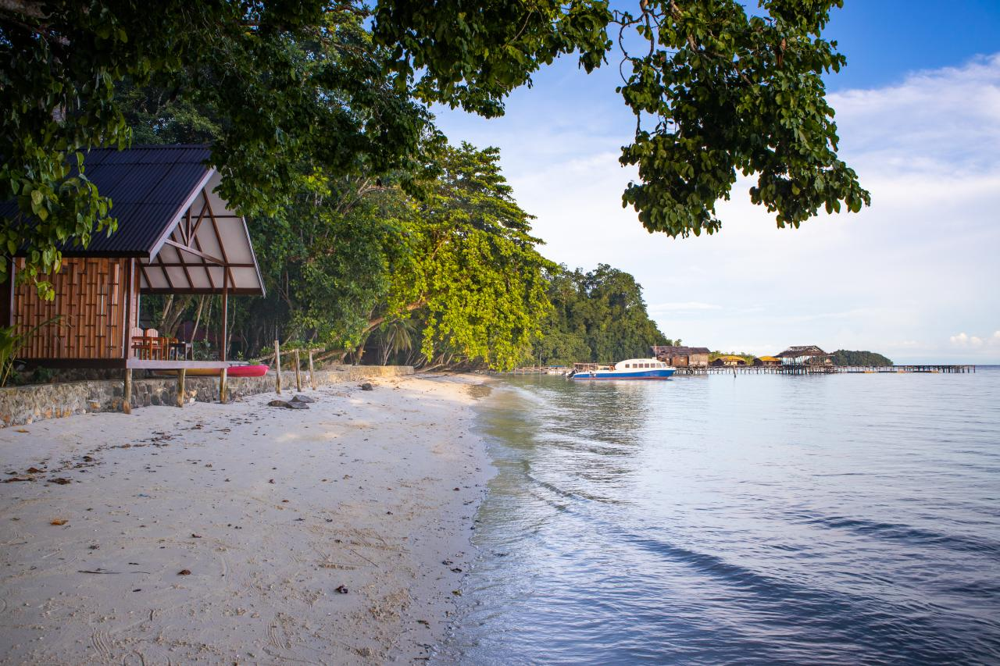

RAJA AMPAT
Hidden Paradise in the Eastern Tip of Indonesia
Menu
TUGAS PEMROGRAMAN WEB 1
NAMA: EKO ZULIYANTO
NIM: 231011400986
KELAS: 05TPLP024
Galeri Foto Raja Ampat
Selamat datang di galeri foto Raja Ampat! Di sini Anda dapat melihat keindahan alam Raja Ampat yang menakjubkan, dari pantai yang eksotis hingga kehidupan bawah laut yang kaya. Setiap kategori berikut menunjukkan berbagai sisi alam dan budaya Raja Ampat.
Pantai Eksotis
Raja Ampat memiliki banyak pantai yang menakjubkan dengan pasir putih dan laut yang jernih. Berikut adalah beberapa foto pantai-pantai indah di Raja Ampat.
|
|
|
 |
Kehidupan Bawah Laut
Raja Ampat adalah surga bagi penyelam dengan terumbu karang yang menakjubkan dan beragam spesies laut. Berikut adalah beberapa foto kehidupan bawah laut yang luar biasa di Raja Ampat.
|
|
|
|
Gunung dan Alam Raja Ampat
Selain keindahan bawah laut, Raja Ampat juga memiliki pemandangan gunung dan alam yang luar biasa. Gunung-gunung karst yang menjulang tinggi memberikan pemandangan yang memukau bagi para wisatawan.
|
|
|
|
Budaya Lokal Raja Ampat
Raja Ampat juga memiliki budaya lokal yang kaya, dengan seni dan tradisi yang diwariskan oleh masyarakat setempat. Berikut adalah foto-foto yang memperlihatkan keunikan budaya Raja Ampat.
|
|
 |
Dibuat untuk Tugas Pembelajaran HTML | Indonesia ♥